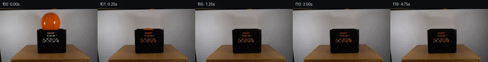

![首帧]()

Round 00
2026-11-04T20:10:52.868905+00:00像素候选变化代码 +196/−0inspection 更新
pixels ab0ec4adc6027dbd · code bde3b7e93120b0a0
查看本轮 generate.py 真实 diff
--- previous/generate.py
+++ current/generate.py
@@ -0,0 +1,196 @@
+"""Deterministic local pixel animation of the observed ball falling into a crate."""
+from pathlib import Path
+import json
+import numpy as np
+from PIL import Image, ImageDraw
+from scipy.ndimage import gaussian_filter, map_coordinates, binary_dilation
+from artifact_io import save
+
+ROOT = Path(__file__).resolve().parent
+SOURCE = np.asarray(Image.open(ROOT / 'first_frame.png').convert('RGB'), dtype=np.uint8)
+H, W = SOURCE.shape[:2]
+Y, X = np.mgrid[:H, :W].astype(float)
+SRC = SOURCE.astype(float)
+CX, CY, R = 132.4, 39.5, 25.5
+FLOOR_CENTER = 86.5
+GRAVITY = 9.81 * (2 * R / .24)
+RESTITUTION = .58
+
+# Segmentation is computed only from this source. The warm connected silhouette
+# includes the pale printing and its blurred orange boundaries.
+warm = (SRC[..., 0]-SRC[..., 1] > 9) & (SRC[..., 0]-SRC[..., 2] > 13)
+region = (X >= 102) & (X <= 164) & (Y >= 7) & (Y <= 58)
+remove = binary_dilation(warm & region, iterations=2) & region
+base = SRC.copy()
+# Row interpolation captures the surrounding photographed wall's vertical
+# illumination gradient. A small residual is copied from nearby wall texture.
+wall_residual = SRC - gaussian_filter(SRC, sigma=(1.2, 1.2, 0))
+for y in range(7, 55):
+ xs = np.flatnonzero(remove[y])
+ if len(xs) == 0:
+ continue
+ lo, hi = int(xs.min()), int(xs.max())
+ left = np.median(SRC[y, max(0, lo-5):lo], axis=0)
+ right = np.median(SRC[y, hi+1:hi+6], axis=0)
+ for x in range(lo, hi+1):
+ a = (x-lo+1)/(hi-lo+2)
+ base[y, x] = left*(1-a)+right*a + .55*wall_residual[y, 179+(x-lo)%25]
+# Missing dark upper lip under the source ball is estimated from visible lip
+# samples to either side. The original crate remains the foreground layer.
+for y in range(55, 61):
+ for x in range(108, 158):
+ if not remove[y, x] and not (y == 58 and SRC[y,x,0]-SRC[y,x,1]>5):
+ continue
+ left = np.median(SRC[y, 104:109], axis=0)
+ right = np.median(SRC[y, 156:162], axis=0)
+ # Avoid using ball-tinted source values on the right of the lip.
+ if right[0]-right[1] > 5:
+ right = np.median(SRC[y, 160:165], axis=0)
+ a = (x-108)/50
+ base[y,x] = left*(1-a)+right*a
+# The highlighted central aperture in the original contains orange light from
+# the initial ball. Neutralize it before rendering the new ball behind it.
+central = (X>=122)&(X<=143)&(Y>=63)&(Y<=69)
+excess = np.maximum(SRC[...,0]-SRC[...,1]-4,0)
+base[...,0] -= excess*central
+base[...,2] += .38*excess*central
+
+# Source brightness isolates the actual perforations, including their soft
+# boundaries. Dark bars retain their photographed texture and opaque geometry.
+brightness = SRC.mean(axis=2)
+aperture_roi = (X>=110)&(X<=155)&(Y>=64)&(Y<=92)
+aperture = np.clip((brightness-24)/76,0,1)*aperture_roi
+aperture[central] = np.maximum(aperture[central],
+ np.clip((brightness[central]-20)/60,0,1))
+# Pixels over the foreground upper lip can expose the moving ball; below the
+# lip the front of the crate can expose it only through measured apertures.
+lip = 57.8 + .014*(X-CX)
+above_lip = np.clip(lip-Y+.5,0,1)
+visibility = np.maximum(above_lip, aperture)
+
+# Build an orange surface atlas, retaining photographed dimples/seams/printing
+# where the source supplies them. Unobserved lower pixels use sphere shading.
+A = 128
+V, U = np.mgrid[:A,:A].astype(float)
+U = (U/(A-1)*2-1)*R
+V = (V/(A-1)*2-1)*R
+q = (U*U+V*V)/(R*R)
+nz = np.sqrt(np.maximum(1-q,0))
+shade = .85 + .15*nz + .07*U/R - .06*(V/R)**2
+atlas = np.stack([176*shade, 65*shade, np.ones_like(shade)],axis=-1)
+coords = np.array([V+CY,U+CX])
+sampled = np.stack([map_coordinates(SRC[...,c],coords,order=1,mode='nearest') for c in range(3)],axis=-1)
+valid = (q<.88)&(V+CY>=15)&(V+CY<=53)&(sampled[...,0]-sampled[...,1]>34)
+# A soft transition prevents a visible border between known and extended pixels.
+blend = gaussian_filter(valid.astype(float), .8)*valid
+atlas = atlas*(1-blend[...,None])+sampled*blend[...,None]
+# Reuse tiny photographed orange texture residuals for the inferred hemisphere.
… diff truncated; 109 more lines …